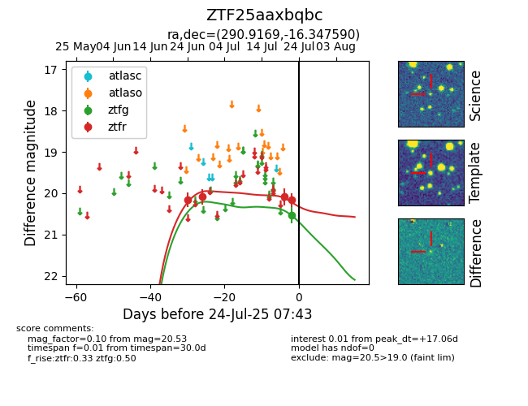

Target ZTF25aaxbqbc at 2025-07-24 07:43, see:
FINK: fink-portal.org/ZTF25aaxbqbc
Lasair: lasair-ztf.lsst.ac.uk/objects/ZTF25aaxbqbc
ALeRCE: alerce.online/object/ZTF25aaxbqbc
alt names
ZTF25aaxbqbc (ztf,fink)
coordinates:
equatorial (ra, dec) = (290.9169,-16.34759)
galactic (l, b) = (21.6713,-14.36192)
photometry
last ztfg=20.53, ztfr=20.16
1 ztfg, 4 ztfr detections
